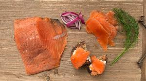

Lox

Ingredients
- 1 lb Fresh Wild Salmon
- 1/2 cup Salt
- 1/2 cup Sugar
- 1/4 cup Dill
Steps
- Pat down salmon with a paper towel and remove the moisture
- Add ingredients.
- Wrap tightly in plastic wrap and refrigerate.
- Rotate and drain every 12 hours (leave in the refrigerator for 3-5 days.
back